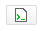

Once again we need to add business logic for our application:
- Set the meeting author, create a pdf copy and store it before a meeting publication
- Send an email to the participants, to inform them about the publication
Once again we need to add business logic for our application:
- Set the meeting author, create a pdf copy and store it before a meeting publication
- Send an email to the participants, to inform them about the publication
 ### Practice - Advanced automation
#### Enable traces to help debugging
- Go to your local automation doc
- Enable the traces by choosing an operation and clicking on the corresponding option
### Practice - Advanced automation
#### Enable traces to help debugging
- Go to your local automation doc
- Enable the traces by choosing an operation and clicking on the corresponding option
 - In operation parameters use the
- In operation parameters use the @{mvel script evaluated} syntax to call variables
- Use the expression editor button to insert your variable directly: 
- With it, you can use the context variables, the Fn object, the Document Wrapper, the Date Wrapper, the current user...
- Uses MVEL expression language
http://doc.nuxeo.com/x/kYAV
### Practice
#### Set the meeting author - Update your chain to set the meeting author's first name and last name - Use the current user's information - Launch your chain through the automation client and see if it works correctlySet the meeting author before a meeting publication
### Practice
#### Update your chain to: - Convert the document as PDF - Update the document to store the PDF copy - Launch your chain through the automation client and see if it works correctlycreate a pdf copy and store it before a meeting publication
 - getNextId(string)
- getNextId(string) getNextId(String) - Create a counter for a business logic specific id
- getVocabularyLabel - Update a document's metadata, depending on the metadata's original value (original value = key, final value = label).
### Practice
#### Build your intranet URL - Stop your server - In yourSend an email to the participants, to inform them about the publication (1/3)
nuxeo-sdk.conf file, create a bestbooks.portal.meeting.publication.baseurl variable
- The variable should contain your intranet's URL to access the document
- Restart your server to apply the changes
### Practice
#### Create an email template - In Studio, go toSend an email to the participants, to inform them about the publication (2/3)
Templates > Email templates and create a template named meetingPublicationTpl
- The template should contain the following information:
- Use the available variables in email templates documentation to help youHello,
The document (document title) is now available on the intranet.
(meeting publication base url)/(document id)
### Practice
#### Update your chain to: - Send an email to the people listed in the meeting's participants - Make sure you retrieve their email adresses, not their usernames ! - Launch your chain through the automation client and see if it works correctlySend an email to the participants, to inform them about the publication (3/3)
### Practice
#### Isolate the PDF copy conversion in a sub chain - Create aIsolate the pdf copy conversion in a sub chain
Launch it only if the file is not a PDF
voidChain containing only a Fetch > Context document operation
- Copy the publishMeeting chain and name the copy publishMeeting_pdfConversion
- Refactor the publishMeeting_pdfConversion chain to keep only the needed operations
#### Launch PDF conversion only if the file is not a PDF
- Refactor the publishMeeting chain to:
- Call the publishMeeting_pdfConversion chain only if **file's mimetype is not** application/pdf
- Remove the operations corresponding to the PDF conversion
/
#